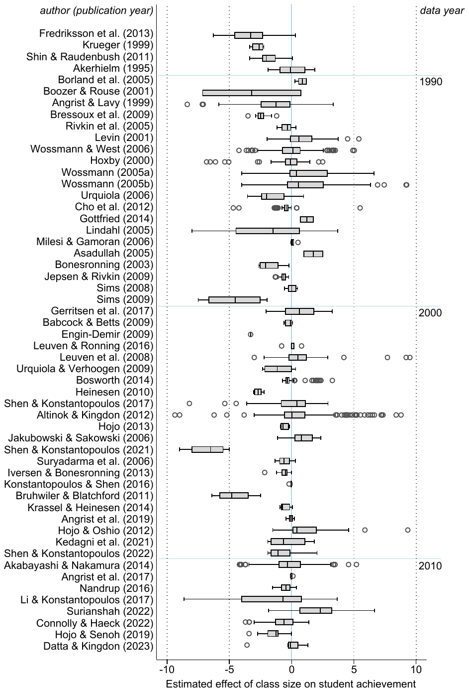
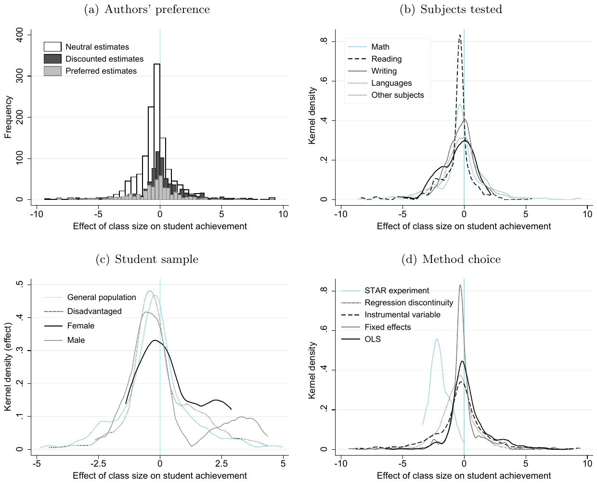
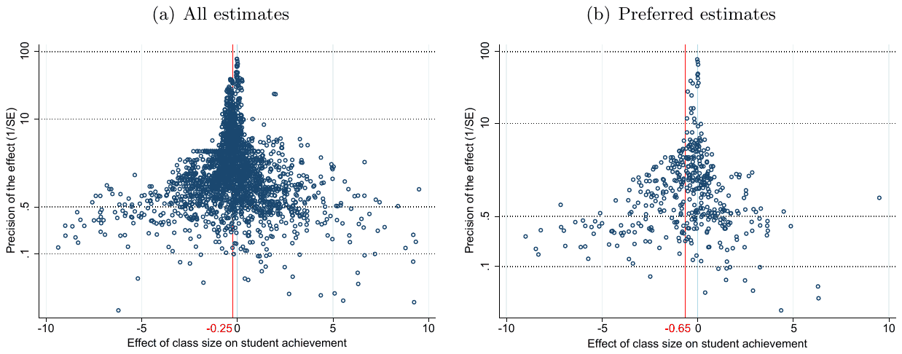
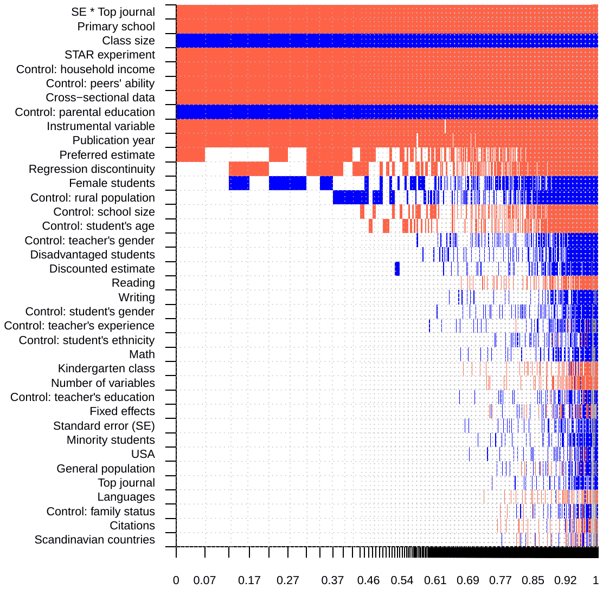
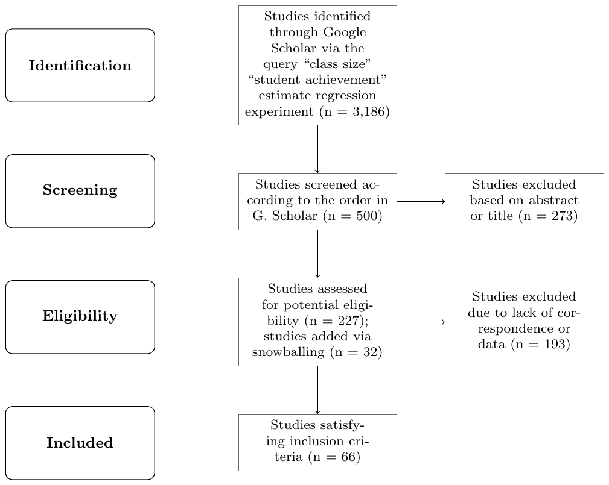

Publication Bias and Model Uncertainty in Measuring the Effect of Class Size on Achievement
Matej Opatrny, Tomas Havranek, Zuzana Irsova, Milan Scasny (2026), "Publication Bias and Model Uncertainty in Measuring the Effect of Class Size on Achievement." Journal of Labor Economics. doi.org/10.1086/737989
Matej Opatrny a, Tomas Havranek a,b,c, Zuzana Irsova a, Milan Scasny a
a Charles University, Prague
b Centre for Economic Policy Research, London
c Meta-Research Innovation Center, Stanford
January 3, 2025
Journal of Labor Economics, forthcoming
* An online appendix with data and code is available at meta-analysis.cz/class. Corresponding author: Zuzana Irsova, zuzana.irsova@ies-prague.org.
JEL Codes: C83, H52, I21
Abstract
Class size reduction mandates are routinely justified by studies reporting positive effects on student achievement. Yet other studies report no effects, and the literature as a whole awaits correction for potential publication bias. Moreover, if identification drives results systematically, the relevance of individual studies will vary. We build a sample of 2,819 estimates collected from 66 studies and for each estimate classify 42 factors that reflect estimation context. We employ nonlinear techniques for publication bias correction and model averaging techniques to address model uncertainty. The results are consistent with little publication bias. The implied class size effect is negligible for all identification approaches except Tennessee's Student/Teacher Achievement Ratio project and for all contexts except classes of fewer than 15 students.
Keywords: Class size, student learning, meta-analysis, publication bias, Bayesian model averaging
1. Introduction
Since 2010, at least 17 jurisdictions have mandated or incentivized class size reductions in countries including Australia, Canada, Finland, France, Germany, India, Israel, New Zealand, Norway, Portugal, South Korea, Spain, the United Kingdom, and the United States (Table B1 in Online Appendix B). Prior to 2010, at least 24 US states had started to mandate or incentivize reductions (Whitehurst & Chingos, 2011). The policy is universally popular among parents and teachers. According to one survey, 90% of American teachers believe that smaller classes can "strongly" or "very strongly" improve student learning (Scholastic, 2012). Aside from robust intuition, reduction mandates claim justification in empirical evidence. For example, the legislation mandating significant class size reductions in New York City starting in September 2023 included the following rationale:
Studies have shown that students learn faster and perform better in smaller classes. (New York State Senate, 2022)
We show that the claim is inconsistent with the bulk of empirical evidence. The implied class size effect is near zero across methods, students, schools, and jurisdictions. Even disadvantaged students seem to benefit little from class size reductions. Different identification approaches, with a single exception, yield no economically significant differences in results. Yet the prevailing public impression, expressed in Wikipedia entries, ChatGPT replies, and legislative justifications, is that empirical research shows benefits of reductions, at least for some students. The impression is to a large extent driven by two influential, high-quality studies: Angrist & Lavy (1999) and Krueger (1999). Together, they have attracted more than 5,500 citations in Google Scholar. But the two studies are not corroborated by the rest of the literature, including recent contributions by Angrist et al. (2017) and Angrist et al. (2019). We document that the near-zero finding is a robust feature of current data and methods.
Our main contribution is twofold. First, we take into account potential publication bias. Meta-analyses of the class size effect are not rare: indeed, one was conducted by the founding father of the method, Gene Glass, soon after he coined the term "meta-analysis" (Glass & Smith, 1979). But no meta-analysis has attempted to correct the literature for publication bias or p-hacking, although such selective reporting in economics routinely exaggerates typical reported estimates by a factor of 2 (Ioannidis et al., 2017; Gechert et al., 2025). We use recently developed techniques for publication bias and p-hacking correction. Second, we address model uncertainty both in meta-analysis and the underlying literature. Existing meta-analyses either give equal weight to each estimate (Hanushek, 1997, 1999) or each study (Mishel & Rothstein, 2002; Krueger, 2003), assign weights proportional to reported precision (Hedges & Stock, 1983; Greenwald et al., 1996; Nye et al., 2002), or restrict their analysis to a handful of estimates they deem particularly reliable (10 studies in the case of Filges et al., 2018). The conclusions of previous meta-analyses vary from no to strong size effects. We collect 42 factors that capture estimation context and, using Bayesian and frequentist model averaging, connect them to differences in reported results.
Publication bias, stemming from the preference of editors, referees, and authors for intuitive and significant results, is especially threatening in class size research. Intuition provides a clear prediction: smaller classes should improve student learning or, at the very least, not be detrimental. Doucouliagos & Stanley (2013) show that fields with a strong underlying intuition tend to suffer more from the bias. The debate concerning class size effects has been heated and sometimes personal (Mishel & Rothstein, 2002). Several high-quality recent papers document the extent of the publication bias problem in economics, often in areas with fewer ex ante reasons to expect bias (Andrews & Kasy, 2019; Blanco-Perez & Brodeur, 2020; Brown et al., 2024; Card et al., 2018; DellaVigna & Linos, 2022; Elliott et al., 2022; Imai et al., 2021; Neisser, 2021; Stanley et al., 2021; Ugur et al., 2020; Vivalt, 2019; Xue et al., 2020). It is therefore all the more remarkable that we find little publication bias in the class size literature. The overall research record in the field is surprisingly undistorted.
Publication bias is sometimes distinguished from p-hacking. In this narrower definition, publication bias denotes the decision (editors', referees', or authors') to publish or suppress the results, which are individually unbiased. P-hacking, then, denotes the intentional or unintentional effort of authors to produce desirable results, typically those that are intuitive and statistically significant. Under p-hacking, even individual estimates can be biased. Both phenomena give rise to a correlation between estimates and standard errors, which should otherwise be zero. But each phenomenon has a different solution. For example, selection models, long used in meta-analysis to correct for publication bias, assume that estimates are individually unbiased (Mathur, 2024)—these models compute the relative publication probability of significant and insignificant results and then re-weight the estimates (Hedges, 1992; Andrews & Kasy, 2019). In addition, these models are weighted by inverse variance, which creates a bias if standard errors are underestimated due to p-hacking. Unfortunately, publication bias and p-hacking are observationally equivalent in most contexts of applied meta-analysis. For the sake of parsimony, we use the term "publication bias" in place of "publication bias and/or p-hacking," reserving the term p-hacking for when it is necessary to distinguish it from publication bias.
Novel meta-analysis techniques can accommodate some forms of p-hacking. Irsova et al. (2024) introduce the meta-analysis instrumental variable estimator (MAIVE), which builds on funnel plot models in the tradition of Egger et al. (1997). Classical funnel plot techniques seek to recover the estimate conditional on maximum precision. That is, these models allow for p-hacking on point estimates. McCloskey & Ziliak (2019) provide a useful analogy to the Lombard effect in psychoacoustics: speakers increase their vocal effort in response to noise. In a similar vein, researchers can respond to noise in their data (imprecision) by more effort (search over specifications) in order to produce large point estimates and reach statistical significance. But standard errors are assumed to be given to the researcher and cannot be manipulated, consciously or unconsciously. The assumption is unlikely to hold in observational research. The corresponding analogy is Taylor's law in ecology: variance decreases with a smaller mean (originally describing population density for various species, Taylor, 1961). Some researchers may be tempted, for example, to use less conservative standard errors when their estimates are small. By exploiting the statistical relationship between the standard error and sample size, Irsova et al. (2024) show in simulations and large-scale applications that using the latter as an instrument for the former addresses many forms of p-hacking as well as method heterogeneity that can produce correlation between estimates and standard errors in the absence of selection.
The class size research as a whole suffers from little bias. The finding, rare in economics, is supported by the rigorously founded selection model due to Andrews & Kasy (2019), the simplified selection model (p-uniform*) due to van Aert & van Assen (2023), the endogenous kink model due to Bom & Rachinger (2019), the weighted average of adequately powered estimates (WAAP) model due to Ioannidis et al. (2017), the stem-based model due to Furukawa (2021), the instrumental MAIVE estimator due to Irsova et al. (2024), as well as classical funnel-based meta-regression techniques with different weights and study-level fixed effects (Stanley, 2005; Stanley & Doucouliagos, 2014). The mean reported effect is economically insignificant and corresponds to a 0.03 standard-deviation increase in test scores after a class size reduction of 10 students, about a tenth of the estimates reported by Krueger (1999).
The meta-analysis mean can be misleading if different identification approaches lead to systematically different results. Empirical studies use five main approaches: i) ordinary least squares with controls, ii) student or class fixed effects (e.g., Chingos, 2012; Lindahl, 2005), iii) instrumental variables with, for example, enrollment or population used as instruments for class size (Borland et al., 2005; Hoxby, 2000), iv) regression discontinuity design using jurisdiction-level limits on class size (Angrist et al., 2017; Urquiola & Verhoogen, 2009), and v) experiments (Krueger, 1999; Shin & Raudenbush, 2011). The first approach is unlikely to succeed in recovering the causal estimate, and researchers typically use OLS only to show what happens if they ignore endogeneity. The class size literature has been an important laboratory of the credibility revolution in empirical economics: the canonical application of regression discontinuity design is due to Angrist & Lavy (1999), and the large-scale Tennessee's Student/Teacher Achievement Ratio (STAR) project (Krueger, 1999) helped propel the drive in economics towards field experiments.
Aside from analyzing these five groups of studies separately, we also take into account the broader issue of model uncertainty in estimation. Researchers make numerous data and method choices at various stages: we collect 42 factors that reflect the context in which researchers obtain their estimates. We then connect these 42 factors to the observed differences in reported class size effects. As the baseline technique, we employ Bayesian model averaging (Steel, 2020), which constitutes the natural response to model uncertainty in the Bayesian framework. To account for collinearity we use the dilution prior due to George (2010). We also report the results of frequentist model averaging with Mallows' weights (Hansen, 2007) employing the orthogonalization of covariate space due to Amini & Parmeter (2012). As the bottom line of our analysis, we use the Bayesian model averaging results to construct a hypothetical ideal study and compute implied estimates of the class size effect for various estimation contexts. We also find some evidence for nonlinearity: for smaller classes, further reduction seems to bring large effects. But the implied effects are still small for classes of more than 15 students.
The results do not suggest strong dependence of reported effects on estimation design. Among the five identification approaches, four deliver effects close to zero. The only exception is the STAR experiment, where even after correction for potential publication bias we find a mean effect almost of the size reported by Krueger (1999). One possible interpretation is that the STAR experiment data are qualitatively superior to all other datasets taken together and so the experimental evidence is the only reliable one. But the rest of the literature includes high-quality studies with eminently plausible identification approaches, especially when regression discontinuity is used, and covers many countries and types of schools. After dozens of attempts, the literature has been unable to replicate the results of the STAR experiment.
The remainder of the paper is structured as follows. Section 2 describes the dataset of class size effects. Section 3 investigates publication bias. Section 4 examines model uncertainty. Section 5 concludes the paper. Appendix A gives details on how we select studies for inclusion in the meta-analysis. Online Appendix B provides additional information on the dataset and robustness checks. Data and code for R and Stata are available at meta-analysis.cz/class.
2. Data
To search for studies reporting empirical estimates of the effect of class size on student achievement, we use Google Scholar because of its universal coverage and ability to inspect the full text of studies, not only the title, abstract, and keywords. Appendix A reports details on our search strategy. We read the abstracts of the first 500 studies identified by the Google Scholar query and download those that show any promise of containing estimates of the class size effect. There are 227 such studies, and we record their references. Next, we go through the 100 studies most frequently cited among the 227 ones identified in the previous stage. This additional step, which is intended to capture important studies potentially omitted by the Google Scholar search, yields additional 32 papers that may provide estimates of the class size effect. Next, we skim the full text of the 259 prospective studies. The ones that could be included in meta-analysis, at least in some models, are listed in Table 1.
| Akabayashi & Nakamura (2014) | Fredriksson et al. (2013) | Leuven et al. (2008) |
|---|---|---|
| Akerhielm (1995) | Gerritsen et al. (2017) | Levin (2001) |
| Altinok & Kingdon (2012) | Gottfried (2014) | Li & Konstantopoulos (2017) |
| Angrist & Lavy (1999) | Heinesen (2010) | Lindahl (2005) |
| Angrist et al. (2017) | Hojo (2013) | McKee et al. (2015) |
| Angrist et al. (2019) | Hojo & Oshio (2012) | Milesi & Gamoran (2006) |
| Arias & Walker (2004) | Hojo & Senoh (2019) | Nandrup (2016) |
| Asadullah (2005) | Hoxby (2000) | Rivkin et al. (2005) |
| Babcock & Betts (2009) | Chetty et al. (2011) | Sandy & Duncan (2010) |
| Bandiera et al. (2010) | Chingos (2012) | Shen & Konstantopoulos (2017) |
| Becker & Powers (2001) | Cho et al. (2012) | Shen & Konstantopoulos (2021) |
| Bonesronning (2003) | Vaag Iversen & Bonesronning (2013) | Shen & Konstantopoulos (2022) |
| Boozer & Rouse (2001) | Jakubowski & Sakowski (2006) | Shin & Raudenbush (2011) |
| Borland et al. (2005) | Jepsen & Rivkin (2009) | Sims (2008) |
| Bosworth (2014) | Kara et al. (2021) | Sims (2009) |
| Bressoux et al. (2009) | Kedagni et al. (2021) | Surianshah (2022) |
| Bruhwiler & Blatchford (2011) | Kennedy & Siegfried (1997) | Suryadarma et al. (2006) |
| Connolly & Haeck (2022) | Kokkelenberg et al. (2008) | Urquiola (2006) |
| Datta & Kingdon (2023) | Konstantopoulos & Shen (2016) | Urquiola & Verhoogen (2009) |
| Dobbelsteen et al. (2002) | Krassel & Heinesen (2014) | Woessmann (2005a) |
| Engin-Demir (2009) | Krueger (1999) | Woessmann (2005b) |
| Francis & Barnett (2019) | Leuven & Ronning (2016) | Woessmann & West (2006) |
Notes: Details on the literature search, which was terminated on March 1, 2024, are shown in Appendix A. The dataset, together with R and Stata codes, is available at meta-analysis.cz/class.
We impose three inclusion criteria. First, the study must report an estimated relationship between test scores and a continuous measure of class size. Second, the study must report standard errors or other statistics from which standard errors can be computed. Third, the study must report the standard deviations of test scores so that we can convert all estimates to a common metric. For the common metric we choose the change in test scores measured in hundredths of a standard deviation corresponding to an increase in class size by one student That is, an estimate of in our dataset means that a class size reduction by 10 students is associated with an improvement in test scores by 0.1 standard deviation, a relatively modest effect. We will consider estimates smaller in absolute value as economically insignificant, also considering the substantial costs of class size reductions that we do not focus on in this paper. Hattie (2009) notes that an effect size below 0.2 standard deviations is typically considered small, with 0.4 standard deviations representing a moderate or more practically significant threshold for educational interventions. Kraft (2020) provides updated benchmarks for causal effect sizes in education: less than 0.05 is considered small, 0.05 to less than 0.2 is medium, and 0.2 or greater is large.1
In total, 54 studies comply with the three inclusion criteria. For a robustness check, we also include additional 12 studies that comply with the first two but not the third criterion; in that case we recompute the reported effects to partial correlation coefficients. Because treatment and control class sizes vary across studies and especially across countries (see Figure B2 and Figure B4 in Online Appendix B), for another robustness check we recompute the effects to represent the change in hundredths of a standard deviation in test scores corresponding to an increase in class size by one standard deviation (Table B5 in Online Appendix B). The robustness checks provide results qualitatively similar to those of our main analysis.
We gather 2,819 estimates of the class size effect reported in 66 primary studies; 2,434 estimates from 54 studies can be used in the main meta-analysis models. To account for within-study dependence we use standard errors clustered at the study level and wild bootstrap; details on robust variance estimation in meta-analysis are available in Pustejovsky & Tipton (2022). For each estimate we collect the standard error and 42 factors that reflect the context in which the estimate is obtained: subjects tested; the characteristics of students, schools, and jurisdictions; estimation characteristics; and publication characteristics. Despite recent advances in AI, the data collection process for meta-analysis cannot be automated. So, two of the co-authors of this paper collected the required tens of thousands of data points by hand. Then they compared their datasets and corrected typos and other mistakes. The final clean dataset, together with codes in R and Stata, is available at meta-analysis.cz/class.
Figure 1 shows the box plot of studies satisfying all three inclusion criteria. The studies are sorted by the age of the data from oldest to youngest. Three observations stand out. First, there is no apparent time trend in the reported estimates. Studies using recent data do not seem to report results systematically different from older studies. Second, within-study variation in results is large and often larger than variation in mean results across studies. This second observation highlights the importance of collecting all estimates from the literature, not just one representative estimate per study. Third, with a few exceptions, the central estimates of individual studies tend to cluster around negative values close to zero. Note that effects below 1 in absolute value are relatively small in economic terms because they imply less than a 0.1 standard-deviation change in test scores following a class size reduction by 10 students. A box plot of countries instead of studies (Figure B5 in Online Appendix B) and a forest plot (Figure B1) give a similar intuition concerning the prevalence of small effects.

Notes: The figure shows a box plot of the estimated effects of class size on achievement. The effects are normalized to represent the change in hundredths of a standard deviation in test scores corresponding to an increase in class size by one student. That is, an estimate of −1 means that a class size reduction by 10 students is associated with an improvement in test scores by 0.1 standard deviations. The studies are sorted by the age of the data from oldest to youngest. The length of each box represents the interquartile range (P25-P75), and the line inside the box represents the median. The whiskers represent the smallest and largest estimates within 1.5 times the range between the upper and lower quartiles. Circles denote outliers. Extreme outliers are excluded from the figure for ease of exposition but included in all statistical tests.

Notes: The figure depicts, for different subsets of data, histograms of the estimated effects of class size on achievement. The effects are normalized to represent the change in hundredths of a standard deviation in test scores corresponding to an increase in class size by one student. That is, an estimate of −1 means that a class size reduction by 10 students is associated with an improvement in test scores by 0.1 standard deviations. Extreme outliers are excluded from the figure for ease of exposition but included in all statistical tests.
We aim to control for differences in data and methodological choices. But in the literature on class size, some choices are idiosyncratic to individual studies or estimates, making them difficult to codify. Many estimates are explicitly described as flawed by the authors of the original studies. Therefore, we depart from the default meta-analysis approach and divide the estimates into three categories: i) preferred by the authors, ii) neutral, and iii) discounted by the authors. This classification reflects data and method choices that are otherwise difficult to include as moderators in meta-analysis. In classifying the “preferred” estimates, we draw inspiration from Lang (2025), focusing on results highlighted in the abstract, introduction, or conclusion. Sometimes authors explicitly state which estimate they prefer or consider as a baseline by comparing it to robustness checks. Most studies yield several preferred estimates, such as results for different subjects or groups of students. We classify estimates as “discounted” if the authors highlight their shortcomings, typically related to identification problems. For each estimate classified as preferred or discounted, the Excel file at meta-analysis.cz/class shows specific reasons for the classification. All other estimates are classified as “neutral.” This classification results in 444 preferred, 1,288 neutral, and 702 discounted estimates.
Figure 2 provides a bird’s-eye view of the potential sources of systematic heterogeneity in the literature. Nevertheless, little heterogeneity is apparent at first sight. The one difference that stands out is the substantially larger negative effect reported in studies focusing on the STAR experiment compared to all other identification approaches. Regression discontinuity, instrumental variables, fixed effects, and OLS give usually zero or very mildly negative results. (Recall that a negative coefficient here means a negative effect of class size on student achievement, and therefore a positive effect of class size reduction policy.) Zero or small effects are also reported on average for individual subjects (math, reading, languages) and students (male, female, disadvantaged). Compared to discounted estimates, preferred estimates seem to be more often negative, but the difference is not great.
More detailed numerical information on the differences in the reported class size effects are available in Table 2. (Table B2 in Online Appendix B provides similar statistics separately for preferred estimates.) The left-hand part of the table provides simple unweighted summary statistics: each estimate has the same weight. In the right-hand part of the table, estimates are weighted by the inverse of the number of estimates reported per study—so that each study has the same weight. The appropriateness of various weights has been a subject of controversy in literature surveys on the class size effect. Hanushek (1997) gives each estimate the same weight, while Krueger (2003) gives each study the same weight. Even with a very different dataset, we confirm the observation of Krueger (2003) that giving each study the same weight results in more substantial estimates of the class size effect. Nevertheless, a different weighting scheme is traditionally used in meta-analysis: inverse variance weights (Greenwald et al., 1996; Hedges & Stock, 1983), which maximize the efficiency of the resulting meta-analysis estimate. Inverse variance weights are not shown in Table 2 but are used later in our analysis. If employed in Table 2, inverse-variance weights would push all the means slightly closer to zero.
| Observations | Unweighted | Weighted | |||||
|---|---|---|---|---|---|---|---|
| Mean | 95% conf. int. | Mean | 95% conf. int. | ||||
| Subjects tested | |||||||
| Math | 1,423 | -0.09 | -0.21 | 0.03 | -0.65 | -0.78 | -0.52 |
| Reading | 403 | -0.69 | -0.84 | -0.54 | -1.12 | -1.32 | -0.91 |
| Writing | 46 | -0.61 | -1.03 | -0.20 | -0.78 | -1.11 | -0.45 |
| Languages | 305 | -0.25 | -0.42 | -0.07 | -1.12 | -1.30 | -0.93 |
| Other subjects | 663 | -0.04 | -0.19 | 0.12 | -0.67 | -0.89 | -0.44 |
| Class and student characteristics | |||||||
| Kindergarten | 229 | -0.79 | -0.97 | -0.61 | -0.68 | -0.84 | -0.51 |
| Primary school | 1,463 | -0.47 | -0.57 | -0.37 | -0.71 | -0.81 | -0.61 |
| Secondary school | 752 | 0.29 | 0.13 | 0.46 | -0.90 | -1.11 | -0.69 |
| Female students | 43 | 0.64 | 0.16 | 1.12 | 1.09 | 0.63 | 1.56 |
| Minority students | 58 | -0.13 | -0.62 | 0.36 | -0.87 | -1.71 | -0.04 |
| Disadvantaged students | 166 | -0.18 | -0.53 | 0.18 | -0.17 | -0.54 | 0.20 |
| General population students | 2,002 | -0.22 | -0.31 | -0.13 | -0.79 | -0.89 | -0.68 |
| Data characteristics | |||||||
| Longitudinal data | 402 | -0.38 | -0.49 | -0.27 | -1.10 | -1.30 | -0.89 |
| Cross-sectional data | 2,026 | -0.23 | -0.33 | -0.13 | -0.66 | -0.76 | -0.55 |
| United States | 637 | -0.61 | -0.71 | -0.51 | -0.81 | -0.97 | -0.66 |
| Scandinavian countries | 237 | -0.35 | -0.68 | -0.02 | -1.10 | -1.37 | -0.83 |
| Other countries | 1,560 | -0.10 | -0.20 | 0.01 | -0.53 | -0.66 | -0.40 |
| Estimation characteristics | |||||||
| STAR experiment | 56 | -1.99 | -2.19 | -1.78 | -2.29 | -2.49 | -2.09 |
| Regression discontinuity | 436 | -0.63 | -0.80 | -0.47 | -1.03 | -1.19 | -0.88 |
| Instrumental variable | 845 | -0.39 | -0.56 | -0.22 | -0.82 | -1.03 | -0.61 |
| Fixed effects | 669 | -0.06 | -0.18 | 0.06 | -0.11 | -0.23 | 0.00 |
| Quasi-experimental | 2,006 | -0.38 | -0.47 | -0.29 | -0.74 | -0.85 | -0.63 |
| OLS | 428 | 0.39 | 0.23 | 0.54 | -0.50 | -0.70 | -0.31 |
| Publication characteristics | |||||||
| Top 5 journals in economics | 221 | -0.92 | -1.17 | -0.68 | -1.57 | -1.81 | -1.33 |
| Other journals | 2,213 | -0.19 | -0.27 | -0.10 | -0.61 | -0.71 | -0.51 |
| Preferred estimate | 444 | -0.65 | -0.89 | -0.42 | -1.22 | -1.50 | -0.93 |
| Preferred estimate in top 5 | 32 | -0.91 | -1.38 | -0.44 | -2.01 | -2.49 | -1.54 |
| Neutral estimate | 1,288 | -0.42 | -0.52 | -0.32 | -0.78 | -0.89 | -0.67 |
| Discounted estimate | 702 | 0.30 | 0.15 | 0.44 | -0.10 | -0.25 | 0.04 |
| All estimates | 2,434 | -0.25 | -0.34 | -0.17 | -0.72 | -0.81 | -0.62 |
Notes: The table shows subsample-specific means for estimated effects of class size on achievement. The effects are normalized to represent the change in hundredths of a standard deviation in test scores corresponding to an increase in class size by one student. That is, an estimate of −1 means that a class size reduction by 10 students is associated with an improvement in test scores by 0.1 standard deviations. In the left-hand portion of the table each estimate has the same weight. In the right-hand portion of the table each study has the same weight; in other words, there we weight estimates by the inverse of the number of estimates reported per study. Estimates are winsorized at the 1% level. For the definition of subsamples see Table 6. The group labeled “quasi-experimental” in the table also includes results for the STAR experiment and fixed effects.
Similarly to Figure 2, Table 2 provides little evidence of systematic heterogeneity in the literature. The mean estimate is −0.25 (−0.72 when each study is given the same weight), both implying an economically small effect. When data from the STAR experiment are used, the primary study is likely to report estimates around −2, a relatively large effect that could justify policies of class size reductions (Krueger, 1999). But other identification strategies, and all other contexts of data and estimation, show much smaller effects. Estimates reported in the top-five economics journals tend to be more negative than those reported in other outlets—though this comparison should be taken with caution, as we only have six studies from top journals. The difference between top and other journals diminishes substantially when we focus on preferred estimates. In general, preferred estimates tend to be slightly more negative than neutral estimates, and discounted estimates are positive (counter-intuitive) on average. One possible explanation for this difference is publication bias.
3. Publication Bias
The phenomenon most commonly associated in meta-analysis with publication bias is a correlation between estimates and standard errors. The lack of any correlation is also the expected consequence of techniques used to estimate the class size effect: otherwise the reported t-statistic would be meaningless. The correlation arises when researchers (or editors or referees) preferentially publish results that have the intuitive sign and are statistically significant. If the point estimate happens to be large enough to offset the standard error, researchers obtain statistical significance. The larger the standard error, the larger the point estimate has to be. A related p-hacking mechanism is the Lombard effect described in the Introduction: given much imprecision, authors may be tempted to try many different specifications until they get a point estimate large enough to produce a t-statistic above 1.96. A visual tool related to this intuition and commonly used in meta-analysis is the so-called funnel plot (Egger et al., 1997; Stanley, 2005): a scatter plot of estimates (on the horizontal axis) on their precision (inverse of the standard error, on the vertical axis). An asymmetry of the funnel plot indicates a correlation between estimates and standard errors and, therefore, publication bias.

Notes: Preferred estimates are those emphasized by the authors of individual studies. The estimated effects reported in individual studies are normalized to represent the change in hundredths of a standard deviation in test scores corresponding to an increase in class size by one student. Extreme outliers are excluded from the figure for ease of exposition but included in all statistical tests. The vertical red line represents the mean estimate.
Figure 3 shows the funnel plot for the class size literature. We observe the theoretically predicted funnel shape: the most precise estimates at the top are concentrated close to each other, while the least precise ones are widely dispersed. Remarkably, the funnel in Panel A is quite symmetrical, a rare sight in economics (Ioannidis et al., 2017). The apparent absence of publication bias is surprising given the strong intuition in favor of negative effects (that is, effects supporting the notion that larger classes hurt achievement) and the potential need to justify class size reduction policies popular with teachers and parents. (In a similar vein, Jackson & Mackevicius 2024 find little publication bias in the quasi-experimental literature estimating the effects of school spending policies in the U.S., though they also find significant underlying effects of these policies.) The funnel plot for the sample of preferred estimates looks less symmetrical, but even here the asymmetry is not substantial relative to what is common in the economics literature.
In both funnels the most precise estimates are close to zero. Many meta-analysis techniques are based on the idea that the top of the funnel is the most informative part of the literature, and therefore they try to estimate the mean reported coefficient conditional on maximum precision. As we will soon see, this common meta-analysis approach can be problematic in economics if p-hacking makes reported standard errors too small and if correlation between estimates and standard errors comes from different sources than publication bias (for example, heterogeneity).
Table 3 shows tests of publication bias and the corresponding estimates of the underlying effect corrected for the bias. The first block of the tables focuses on all estimates in the literature, the second block focuses on estimates preferred by the authors of the individual studies. In Online Appendix B, Table B4 presents the results of tests for other subsets of the literature (STAR experiment, regression discontinuity, instrumental variables, OLS), and Table B5 considers other definitions of the effect size (partial correlation coefficients, effects recomputed to represent standard-deviation changes in class size). The robustness checks generally yield results on publication bias similar to the baseline analysis in the first block of Table 3.2 Each block has two panels. Panel A reports the results of a linear regression of estimates on standard errors. Panel B reports the results of more complex nonlinear models, two of which are selection models independent of the funnel plot.
| Block 1: All estimates | |||||
|---|---|---|---|---|---|
| Panel A: Linear | OLS | FE | IV | Study | Precision |
| Publication bias (standard error) | 0.0331 | 0.00613 | 0.0644 | -0.0733 | -0.0575 |
| (0.0944) | (0.0795) | (0.150) | (0.210) | (0.140) | |
| [-0.505, 0.252] | [-0.287, 0.416] | [-0.554, 0.413] | [-0.505, 0.190] | ||
| {-0.277, 0.347} | |||||
| Effect beyond bias (constant) | -0.297*** | -0.262** | -0.345*** | -0.625*** | -0.182*** |
| (0.114) | (0.101) | (0.0929) | (0.212) | (0.0577) | |
| [-0.536, -0.0657] | [-0.716, -0.134] | [-1.071, -0.204] | [-0.365, -0.021] | ||
| First-stage robust F-stat | 22.5 | ||||
| Panel B: Nonlinear | WAAP | Stem | Kink | p-uniform* | Selection |
| Publication bias | -0.399*** | P = 0.713 | |||
| (0.071) | (0.151) | ||||
| Effect beyond bias | -0.066*** | -0.121 | -0.09*** | -0.496** | -0.236*** |
| (0.021) | (0.148) | (0.009) | (0.212) | (0.046) | |
| Observations | 2,434 | 2,434 | 2,434 | 2,434 | 2,434 |
| Block 2: Preferred estimates | |||||
| Panel A: Linear | OLS | FE | IV | Study | Precision |
| Publication bias (standard error) | -0.0910 | -0.0807 | -0.233 | -0.0675 | -0.234 |
| (0.115) | (0.102) | (0.214) | (0.223) | (0.171) | |
| [-0.852, 1.884] | [-0.811, 0.302] | [-0.663, 0.737] | [-0.678, 0.106] | ||
| {-0.721, 0.254} | |||||
| Effect beyond bias (constant) | -0.507** | -0.531** | -0.177 | -1.134** | -0.176** |
| (0.205) | (0.236) | (0.182) | (0.458) | (0.0834) | |
| [-1.000, -0.066] | [-0.436, 0.235] | [-2.088, -0.189] | [-0.405, -0.002] | ||
| First-stage robust F-stat | 13.6 | ||||
| Panel B: Nonlinear | WAAP | Stem | Kink | p-uniform* | Selection |
| Publication bias | -0.505*** | P = 0.848 | |||
| (0.102) | (0.214) | ||||
| Effect beyond bias | -0.046 | -0.040 | -0.074*** | -0.329*** | -0.251*** |
| (0.040) | (0.094) | (0.014) | (0.086) | (0.081) | |
| Observations | 444 | 444 | 444 | 444 | 444 |
Notes: Preferred estimates are those emphasized by the authors of individual studies (see text for details). Panel A reports the results of a linear regression: , where denotes the i-th class size effect estimated in the j-th study, and denotes the standard error. The class size effects are normalized to represent the change in hundredths of a standard deviation in test scores corresponding to an increase in class size by one student. That is, an estimate of −1 means that a class size reduction by 10 students is associated with an improvement in test scores by 0.1 standard deviations. FE: study-level fixed effects. IV: reported standard errors are instrumented by the inverse of the square root of sample size. Study: estimates are weighted by the inverse of the number of estimates reported per study. Precision: estimates are weighted by their inverse variance. In Panel B, WAAP denotes the weighted average of adequately powered estimates (Ioannidis et al., 2017), Stem denotes the stem-based technique (Furukawa, 2021), Kink denotes the endogenous kink model (Bom & Rachinger, 2019), p-uniform* denotes the technique due to van Aert & van Assen (2023), and Selection denotes the technique due to Andrews & Kasy (2019). In the selection model, P denotes the probability that estimates insignificant at the 5% level are published relative to the probability that significant estimates are published. Standard errors, clustered at the study level, are reported in parentheses. In square brackets we report 95% confidence intervals from wild bootstrap (Roodman et al., 2018). For IV, in curly brackets we report the 95% confidence interval based on Anderson & Rubin (1949). * p < 0.10, ** p < 0.05, *** p < 0.01.
A basic test of the funnel plot intuition, an OLS regression, is shown in the first column. Usually called the “Egger regression” after Egger et al. (1997), it was first used by Card & Krueger (1995). The next specification adds study fixed effects to filter out unobserved study-level heterogeneity. (Observed heterogeneity, both within- and between-study, will be addressed in the next section.) The third specification uses the meta-analysis instrumental variable estimator (MAIVE) due to Irsova et al. (2024). If standard errors are p-hacked in a mechanism analogous to the Taylor’s law discussed in the Introduction, for example by using inappropriate clustering, the top of the funnel can be a biased estimate of the underlying mean effect. Also, some method choices can jointly influence estimates and standard errors, rendering the canonical publication bias correction unreliable. Moreover, using IV in primary studies can yield a mechanical relationship between estimates and standard errors (Keane & Neal, 2023). One solution is to use the inverse of the square root of sample size as an instrument for the reported standard error. Sample size is related to the standard error by definition, and it is difficult to exaggerate via p-hacking. To the extent that sample size does not drive the selection of methods that, in turn, systematically influence both estimates and standard errors, sample size is a valid instrument in this literature. The next two specifications in Panel A use alternative weights: proportional to the inverse of the number of estimates reported per study (Krueger, 2003) and to the inverse variance of the estimates (Hedges & Stock, 1983).
Panel B of Table 3 shows the results of five nonlinear models that correct the reported mean effect for potential publication bias. The first model is the weighted average of adequately powered estimates (WAAP) developed by Ioannidis et al. (2017). This model is based on the funnel plot, discards estimates with retrospective power below 80%, and computes an inverse-variance-weighted mean of the remaining estimates. The next model, stem-based technique due to Furukawa (2021), extends the previous one by endogenously determining what proportion of the most informative estimates to use. The proportion is determined by exploiting the trade-off between bias and variance: it is inefficient to discard estimates (variance increases), but imprecise estimates are more likely to be selectively reported (publication bias increases). The stem-based technique minimizes the sum of bias and variance. The third nonlinear model, the endogenous kink technique due to Bom & Rachinger (2019), is based on the Egger regression but adds a constant segment for highly statistically significant estimates, when it probably does not matter for publication bias if the standard error changes. The fourth model, p-uniform* (van Aert & van Assen, 2023), is a simplified selection model based on the statistical principle that p-values should be uniformly distributed at the mean underlying effect size. Finally, the rigorously founded selection model by Andrews & Kasy (2019) computes the probability that each estimate within a particular significance bracket is published, and weights the reported estimates by the inverse of that probability.
Table 3 shows little evidence of publication bias; focusing on preferred estimates does not change the results qualitatively. The tests in Panel A corroborate the intuition of the funnel plot: little correlation appears between estimates and the corresponding standard errors. The mean class size effect (the constant in the regression) corrected for publication bias is therefore not far from the raw mean presented earlier. Inverse-variance weights, common in meta-analysis and used in the last specification of Panel A, yield a smaller mean effect than alternative weighting schemes. Models in Panel B serve as potentially more reliable estimators of the underlying mean effect because they do not assume (as Panel A techniques do) that publication bias is a linear function of the standard error. As noted by Andrews & Kasy (2019) and Stanley & Doucouliagos (2014), the linearity assumption is unlikely to hold in meta-analysis. Nonlinear techniques yield corrected mean effects that are still negative but sometimes closer to zero. Overall, any potential publication bias in the literature taken as a whole appears weak, and the implied class size effect is small.
| All estimates | Regression discontinuity | Instrumental variable | |
|---|---|---|---|
| Correlation | 0.555 | 0.835 | 0.609 |
| [0.413, 0.537] | [0.606, 0.816] | [0.369, 0.599] | |
| Observations | 2,434 | 436 | 845 |
| Fixed effects | Endogeneity ignored | Preferred estimates | |
| Correlation | 0.487 | 0.526 | 0.695 |
| [0.383, 0.59] | [0.37, 0.63] | [0.48, 0.72] | |
| Observations | 669 | 433 | 444 |
Notes: Following Kranz & Putz (2022) and the test suggested by Isaiah Andrews, the table shows, for various subsets of the literature, the correlation coefficient between the logarithm of the absolute value of the estimated class size effect and the logarithm of the corresponding standard error, weighted by the inverse publication probability estimated by the Andrews & Kasy (2019) model. If the assumptions of the model hold, the correlation is zero. Not enough estimates are available to conduct this test meaningfully for the STAR experiment. Bootstrapped 95% confidence intervals in parentheses.
| All estimates | 20 bins | 15 bins | 10 bins | 5 bins |
|---|---|---|---|---|
| Test for non-increasingness | 0.186 | 0.800 | 0.733 | 1.000 |
| Test for monotonicity and bounds | 0.103 | 0.807 | 0.523 | 1.000 |
| Observations () | 1,104 | 1,104 | 1,104 | 1,104 |
| Total observations | 2,434 | 2,434 | 2,434 | 2,434 |
| Preferred estimates | 20 bins | 15 bins | 10 bins | 5 bins |
| Test for non-increasingness | 0.434 | 0.005 | 0.395 | 1.000 |
| Test for monotonicity and bounds | 0.100 | 0.001 | 0.494 | 1.000 |
| Observations () | 161 | 161 | 161 | 161 |
| Total observations | 444 | 444 | 444 | 444 |
Notes: The table shows p-values for each test; the null hypothesis is no p-hacking or publication bias. The techniques rely on the conditional chi-squared test of Cox & Shi (2023). The first technique is a histogram-based test for non-increasingness of the p-curve, the second technique is a histogram-based test for 2-monotonicity and bounds on the p-curve and the first two derivatives. Both tests feature cluster-robust variance estimators. Note that there are some types of p-hacking against which these tests have relatively low power (Elliott et al., 2024). Preferred estimates are those emphasized by the authors of individual studies.
As we have noted, most meta-analysis techniques are based on strong assumptions. The main one is the lack of correlation between estimates and standard errors in the absence of publication bias. The model of Andrews & Kasy (2019) allows an indirect test of this assumption (Kranz & Putz, 2022). If all assumptions of the selection model hold, estimates and standard errors, re-weighted by the inverse publication probability computed by the selection model, should be uncorrelated. Table 4 shows the results for various subsets of data: we always find a substantial correlation. The finding indicates that the zero correlation assumption is tenuous. We address the issue using two strategies. First, we estimate the MAIVE model due to Irsova et al. (2024). The results are broadly in line with the baseline techniques. Second, we employ the novel tests due to Elliott et al. (2022). The first technique is a histogram-based test for non-increasingness of the p-curve, the second technique is a histogram-based test for 2-monotonicity and bounds on the p-curve and the first two derivatives. Neither test relies on the orthogonality assumption. We reject the null hypothesis of no bias only for one specification (15 bins) and the sample of preferred estimates. Given the multiple tests, we do not take this rejection as evidence of bias in the entire literature. Note, however, that there are some types of p-hacking against which these tests have relatively low power (Elliott et al., 2024).
In Table B6 in Online Appendix B we present a more flexible version of the selection model based on Andrews & Kasy (2019). Instead of estimating publication probabilities for estimates that are statistically (in)significant at the 5% level, now we consider four groups of estimates: significant at the 1% level, significant only at the 5% level, significant only at the 10% level, and insignificant at common levels. The publication probability for the first group is set to 1. Though we obtain some evidence of publication bias (less significant estimates seem slightly less likely to be published), the corrected effect is close to the raw mean of −0.25. All in all, our analysis suggests that the literature is not much distorted by publication bias.
4. Model Uncertainty
The correlation between estimates and standard errors, attributed in the previous section to publication bias, can also arise from or be mitigated by heterogeneity in the class size literature. One task of the present section, therefore, is to make sure our conclusions regarding publication bias and the mean underlying effect survive an explicit treatment of heterogeneity. In this task we face the twin problem of model uncertainty: one at the level of individual class size studies, the other at the level of meta-analysis. Regarding the former, the literature lacks a clear consensus on how a “best practice” class size study should look, and individual studies differ in dozens of aspects, big and small. Regarding the latter, it is unclear which of the dozens of characteristics potentially reflecting heterogeneity should be added to the final meta-analysis model. We address the former source of model uncertainty by systematically tracing the differences in results to differences in the data and methodology used by the primary studies. In the process we also address model uncertainty in meta-analysis by using Bayesian and frequentist model averaging. As the bottom line we provide estimates of the class size effect, corrected for potential publication bias and misspecifications, in various contexts.
We collect 42 aspects that reflect the context in which the estimates are obtained. The resulting variables are described in Table 6. For ease of exposition, we divide the variables into five groups: subjects tested (math, reading, writing), class and student characteristics (kindergarten, primary school, secondary school, class size, female students, minority students, disadvantaged students), data characteristics (cross section, panel, countries), estimation characteristics (STAR experiment, regression discontinuity, instrumental variables, fixed effects, OLS, controls for students, teachers, and schools), and publication characteristics (top-five journals, citations, publication year, journal impact factor, preferred or discounted estimate).
| Variable | Description | Mean | SD | WM |
|---|---|---|---|---|
| Class size effect | Estimated effect of class size on student achievement; normalized to represent the change in hundredths of a standard deviation in test scores corresponding to an increase in class size by one student (response variable). | -0.25 | 2.06 | -0.72 |
| Standard error (SE) | Standard error of the estimated class size effect. | 1.27 | 2.12 | 1.24 |
| SE * Top journal | Interaction of the standard error and a dummy that equals one for the top-five journals. | 0.07 | 0.30 | 0.09 |
| Subjects tested | ||||
| Math | = 1 if the test subject is mathematics. | 0.58 | 0.49 | 0.53 |
| Reading | = 1 if the test subject is reading. | 0.17 | 0.37 | 0.18 |
| Writing | = 1 if the test subject is writing. | 0.02 | 0.14 | 0.02 |
| Languages | = 1 if the test subject is languages (native or foreign). | 0.13 | 0.33 | 0.15 |
| Other subjects | = 1 if the test subject is other than mathematics, reading, writing or languages (reference category for test subjects). | 0.27 | 0.45 | 0.23 |
| Class and student characteristics | ||||
| Kindergarten class | = 1 if the estimate corresponds to the kindergarten grade. | 0.09 | 0.29 | 0.06 |
| Primary school | = 1 if the estimate corresponds to grades 1–5. | 0.60 | 0.49 | 0.56 |
| Secondary school | = 1 if the estimate corresponds to grades 6–12 (reference category for grade type). | 0.31 | 0.46 | 0.41 |
| Class size | The logarithm of the average class size used for the estimation minus sample minimum of class size in the literature. | 2.60 | 0.43 | 2.51 |
| Female students | = 1 if the effect is estimated for female students only. | 0.02 | 0.13 | 0.02 |
| Minority students | = 1 if the effect is estimated for minority students only. | 0.02 | 0.15 | 0.01 |
| Disadvantaged students | = 1 if the effect is estimated only for disadvantaged students (students from low-income families, incomplete families, with low-educated parents, with low-experienced or low-educated teachers, low-performing students, or students with learning disabilities). | 0.07 | 0.25 | 0.05 |
| General population | = 1 if the effect is estimated for students representing the general population. | 0.82 | 0.38 | 0.88 |
| Data characteristics | ||||
| Cross-sectional data | = 1 if cross-sectional data are used. | 0.83 | 0.37 | 0.85 |
| Longitudinal data | = 1 if panel data are used (reference category for data dimension). | 0.17 | 0.37 | 0.14 |
| United States | = 1 if the estimate uses data from the United States. | 0.26 | 0.44 | 0.30 |
| Scandinavian countries | = 1 if the estimate uses data from Scandinavia (Denmark, Finland, Norway, Sweden). | 0.10 | 0.30 | 0.18 |
| Other countries | = 1 if the country for which the effect is estimated is other than the United States or Scandinavian countries (reference category for country variables). | 0.64 | 0.48 | 0.53 |
| Estimation characteristics | ||||
| STAR experiment | = 1 if the STAR experiment is used to identify the effect. | 0.02 | 0.15 | 0.04 |
| Regression discontinuity | = 1 if regression discontinuity design is used to identify the effect. | 0.18 | 0.38 | 0.17 |
| Instrumental variable | = 1 if the instrumental variable approach is used to identify the effect. | 0.35 | 0.48 | 0.35 |
| Variable | Description | Mean | SD | WM |
|---|---|---|---|---|
| Fixed effects | = 1 if student fixed-effects are included in the model (or the value-added model is used) to estimate the effect. | 0.27 | 0.45 | 0.22 |
| OLS | = 1 if the method used to estimate the effect does not explicitly account for endogeneity (reference category for the method variables). | 0.18 | 0.38 | 0.21 |
| Number of variables | The logarithm of the number of explanatory variables used in the primary study. | 2.38 | 0.79 | 2.57 |
| Control: student’s gender | = 1 if a control for the gender of students is included. | 0.70 | 0.46 | 0.73 |
| Control: student’s age | = 1 if a control for the age of students is included. | 0.54 | 0.50 | 0.35 |
| Control: student’s ethnicity | = 1 if a control for ethnicity, nationality, or immigration-related status of a student is included. | 0.48 | 0.50 | 0.36 |
| Control: household income | = 1 if a control for the household income of students’ family is included. | 0.23 | 0.42 | 0.36 |
| Control: parental education | = 1 if a control for the education of students’ parents is included. | 0.51 | 0.50 | 0.51 |
| Control: family status | = 1 if a control for family status (married, cohabiting, same-sex, divorced, or single parent) is included. | 0.21 | 0.41 | 0.24 |
| Control: peers’ ability | = 1 if a control for in-class peer ability is included (e.g. IQ scores of classmates). | 0.21 | 0.41 | 0.26 |
| Control: teacher’s experience | = 1 if a control for the teacher’s experience is included. | 0.39 | 0.49 | 0.44 |
| Control: teacher’s gender | = 1 if a control for the teacher’s gender is included. | 0.31 | 0.46 | 0.30 |
| Control: teacher’s education | = 1 if a control for the teacher’s education is included. | 0.24 | 0.43 | 0.35 |
| Control: school size | = 1 if a control for school size (number of the first-year enrollees or the total number of students) is included. | 0.19 | 0.39 | 0.17 |
| Control: rural population | = 1 if a control for the proportion of people living in rural area within the school district is included. | 0.13 | 0.34 | 0.15 |
| Publication characteristics | ||||
| Preferred estimate | = 1 if the estimate is preferred by the authors of the original study. | 0.18 | 0.39 | 0.31 |
| Discounted estimate | = 1 if the estimate is discounted by the authors of the original study. | 0.29 | 0.45 | 0.29 |
| Neutral estimate | = 1 if the estimate is neither preferred nor discounted by the authors of the original study (reference category for authors’ preference). | 0.53 | 0.50 | 0.40 |
| Top journal | = 1 if the study was published in a top-five journal in economics (Econometrica, American Economic Review, Journal of Political Economy, Quarterly Journal of Economics, Review of Economic Studies). | 0.09 | 0.29 | 0.11 |
| Citations | The logarithm of the number of per-year citations received since the study first appeared in Google Scholar. | 2.41 | 0.98 | 2.31 |
| Publication year | The logarithm of the year when the first draft of the study appeared in Google Scholar minus the sample minimum in the literature. | 2.77 | 0.45 | 2.70 |
Notes: SD = standard deviation, WM = mean weighted by the inverse of the number of estimates reported per study. OLS = ordinary least squares.
The complexity of the literature gives rise to model uncertainty in meta-analysis, and the natural solution in the Bayesian setting is Bayesian model averaging (BMA, Steel, 2020). BMA runs many regressions with the estimated class size effect on the left-hand side and various subsets of the variables introduced in Table 6 on the right-hand side. It then weights the individual regression models by goodness of fit and parsimony. BMA has recently been used in economics meta-analyses by Ehrenbergerova et al. (2023); Elminejad et al. (2023); Gechert et al. (2022); Havranek et al. (2024); Kroupova et al. (2024); Matousek et al. (2022). We use the unit information g-prior recommended by Eicher et al. (2011) and the dilution model prior due to George (2010). The dilution prior addresses potential collinearity in meta-regression: models that feature a small determinant of the correlation matrix get a smaller weight. Because the choice of priors is inherently subjective, we add two robustness checks. First, a BMA variant with BRIC g-prior based on Fernandez et al. (2001) and the beta-binominal model prior according to Ley & Steel (2009). Second, frequentist model averaging with Mallows’ weights (Hansen, 2007) using the orthogonalization of the covariate space suggested by Amini & Parmeter (2012). The results of the robustness checks are broadly in line with our baseline results are available available in Figure B7 and Table B8 in Online Appendix B.
The outcome of BMA is depicted graphically in Figure 4. The explanatory variables are ranked according to their posterior inclusion probabilities (analogous to statistical significance in the frequentist sense) from the highest at the top to the lowest at the bottom. The horizontal axis measures cumulative posterior model probability (analogous to adjusted R-squared or information criteria in the frequentist sense). Posterior model probability is the BMA weight of individual models; the ones with the best combination of fit and parsimony are shown on the left. Posterior inclusion probabilities are the sums of posterior model probabilities for the models in which the variable is included. Blue color (darker in grayscale) means that the estimated regression parameter of the corresponding explanatory variable is positive. For example, the color is universally blue for class size, meaning that the reported class size effect typically becomes more positive (i.e., weaker) for larger classes. Red color (lighter in grayscale) means the estimated parameter of the corresponding explanatory variable is negative. Blank cells mean that the corresponding explanatory variable is excluded from the model. The figure makes it clear that most of the 42 variables do not help explain the systematic differences in reported class size effect. Only 10 variables are robustly important, and their corresponding regression coefficients have the same sign irrespective of other controls being included or ignored.

Notes: The figure depicts the results of the benchmark BMA model reported in Table 7. We employ the unit information g-prior (the prior has the same weight as one observation of data) recommended by Eicher et al. (2011) and the dilution prior suggested by George (2010), which accounts for collinearity. The explanatory variables are ranked according to their posterior inclusion probabilities from the highest at the top to the lowest at the bottom. The horizontal axis measures cumulative posterior model probability. Blue color (darker in grayscale) = the estimated parameter of the corresponding explanatory variable is positive. Red color (lighter in grayscale) = the estimated parameter of the corresponding explanatory variable is negative. No color = the corresponding explanatory variable is not included in the model. Numerical results are reported in Table 7. All variables are described in Table 6.
| Response variable: reported class size effect | Bayesian model averaging (baseline model) | OLS (robustness check) | ||||
|---|---|---|---|---|---|---|
| P. mean | P. SD | PIP | Coef. | SE | p-value | |
| Constant | 1.36 | NA | 1.00 | 1.48 | 1.05 | 0.16 |
| Standard error (SE) | 0.00 | 0.00 | 0.01 | |||
| SE * Top journal | -1.55 | 0.18 | 1.00 | -1.64 | 0.35 | 0.00 |
| Subjects tested | ||||||
| Math | 0.00 | 0.02 | 0.02 | |||
| Reading | -0.01 | 0.04 | 0.03 | |||
| Writing | 0.01 | 0.09 | 0.03 | |||
| Languages | 0.00 | 0.01 | 0.01 | |||
| Class characteristics | ||||||
| Kindergarten class | 0.00 | 0.04 | 0.01 | |||
| Primary school | -0.64 | 0.10 | 1.00 | -0.59 | 0.23 | 0.01 |
| Class size | 0.59 | 0.10 | 1.00 | 0.59 | 0.21 | 0.01 |
| Female students | 0.34 | 0.46 | 0.39 | |||
| Minority students | 0.00 | 0.04 | 0.01 | |||
| Disadvantaged students | 0.02 | 0.08 | 0.06 | |||
| General population students | 0.00 | 0.02 | 0.01 | |||
| Data characteristics | ||||||
| Cross-sectional data | -1.04 | 0.15 | 1.00 | -1.06 | 0.28 | 0.00 |
| USA | 0.00 | 0.02 | 0.01 | |||
| Scandinavian countries | 0.00 | 0.01 | 0.01 | |||
| Estimation technique | ||||||
| STAR experiment | -1.52 | 0.29 | 1.00 | -1.39 | 0.24 | 0.00 |
| Regression discontinuity | -0.19 | 0.22 | 0.49 | |||
| Instrumental variable | -0.43 | 0.12 | 0.99 | -0.35 | 0.21 | 0.09 |
| Fixed effects | 0.00 | 0.02 | 0.01 | |||
| Number of variables | 0.00 | 0.01 | 0.01 | |||
| Control: student’s gender | 0.01 | 0.05 | 0.03 | |||
| Control: student’s age | -0.05 | 0.12 | 0.17 | |||
| Control: student’s ethnicity | 0.00 | 0.02 | 0.02 | |||
| Control: household income | -0.75 | 0.12 | 1.00 | -0.73 | 0.33 | 0.03 |
| Control: parental education | 0.67 | 0.13 | 1.00 | 0.75 | 0.22 | 0.00 |
| Control: family status | 0.00 | 0.01 | 0.01 | |||
| Control: peers’ ability | -0.74 | 0.12 | 1.00 | -0.73 | 0.20 | 0.00 |
| Control: teacher’s experience | 0.00 | 0.03 | 0.02 | |||
| Control: teacher’s gender | 0.02 | 0.09 | 0.07 | |||
| Control: teacher’s education | 0.00 | 0.02 | 0.01 | |||
| Control: school size | -0.06 | 0.15 | 0.19 | |||
| Control: rural population | 0.11 | 0.19 | 0.28 | |||
| Publication characteristics | ||||||
| Preferred estimate | -0.17 | 0.18 | 0.52 | -0.33 | 0.16 | 0.03 |
| Discounted estimate | 0.01 | 0.05 | 0.05 | |||
| Top journal | 0.00 | 0.03 | 0.01 | |||
| Citations | 0.00 | 0.01 | 0.01 | |||
| Publication year | -0.54 | 0.15 | 0.97 | -0.63 | 0.23 | 0.01 |
| Observations | 2,434 | 2,434 |
Notes: The response variable is the estimate of the effect of class size on achievement normalized to represent the change in hundredths of a standard deviation in test scores corresponding to an increase in class size by one student. SE = standard error, P. mean = posterior mean, P. SD = posterior standard deviation, PIP = posterior inclusion probability. In the left-hand part of the table we employ Bayesian model averaging (BMA) using the g-prior and model prior recommended by Eicher et al. (2011) and additionally the dilution prior suggested by George (2010). The specification in the right-hand part of the table employs ordinary least squares (OLS) using variables with at least 50% PIP in BMA. The posterior mean in Bayesian model averaging (or alternatively the estimated coefficient in the frequentist model) denotes the marginal effect of a study characteristic on the effect reported in the literature. For a detailed description of all the variables see Table 6; for details on the BMA procedure see Table B7 and Figure B6 in Online Appendix B.
Figure 5. Posterior coefficient distributions for selected variables The figure is in the PDF.
Notes: The figure depicts the posterior coefficient distributions of the regression coefficients corresponding to selected variables in the baseline BMA estimation. For instance, the coefficient corresponding to STAR experiment is negative and substantially far from zero in all models irrespective of other variables being included or ignored.
More details on the baseline BMA estimation are available in Table 7 and Figure 5. Table 7 reports the numerical results of BMA together with a simple OLS check: the robustness check only includes variables with posterior inclusion probability above 0.5. Figure 5 shows posterior coefficient distributions for the most important variables. The BMA results corroborate the previous findings regarding publication bias: on average in the literature there is little relation between estimates and standard errors, even if we control for various aspects of data and methodology. There seems to be some correlation for top-five journals, but, as we have noted, we do not have enough studies from top-five journals to interpret this finding with confidence. Once again, we also find that the STAR experiment yields results systematically different from those of other identification approaches. Estimates obtained using regression discontinuity, instrumental variables, fixed effects, and OLS are on average relatively close to each other, though RDD and especially IV estimates tend to be slightly more negative than OLS and fixed effects. We also find that class size effects tend to be somewhat stronger in primary schools compared to secondary schools and in smaller classes compared to larger classes, that panel data bring weaker class size effects than cross-sectional data, that newer studies yield on average stronger effects, and that some characteristics of students and peers can matter for the class size effect. Estimates preferred by the authors of original studies tend to be a bit more negative than neutral or discounted estimates.
What can we say about the class size effect in various contexts, after correction for potential publication bias and misspecifications? Table 8 shows our attempt to answer this question. The implied effects are computed as fitted values from the Bayesian model averaging exercise. The overall mean, in the bottom line, is conditional on the following choices: no publication bias (which means we plug in zero for the standard error), preference for panel data (cross-sectional data = 0), preference for experimental or quasi-experimental estimates (OLS = 0), preference for studies that are published recently, highly cited, and featured in an outlet with a high impact factor. Naturally, we also prefer estimates preferred by the authors of the original studies, so we set the variable Preferred to 1 and the variable Discounted to 0. Other variables are set to their sample means. The resulting estimate is virtually zero, albeit with a wide confidence interval. In the next rows we keep the above definition of “best practice” and only change the relevant part—for example, in the first row, “STAR experiment”, we set the STAR experiment variable equal to one and other identification variables equal to zero.
| Effect | 95% conf. int. | ||
|---|---|---|---|
| STAR experiment | -1.50 | -3.04 | 0.04 |
| Regression discontinuity | -0.18 | -1.36 | 1.00 |
| Instrumental variable | -0.42 | -1.59 | 0.75 |
| Fixed effects | 0.01 | -1.17 | 1.19 |
| OLS | 0.01 | -1.19 | 1.21 |
| Kindergarten | 0.18 | -1.10 | 1.46 |
| Primary school | -0.46 | -1.65 | 0.72 |
| Secondary school | 0.18 | -0.99 | 1.35 |
| Disadvantaged students | -0.19 | -1.42 | 1.03 |
| USA | -0.21 | -1.30 | 0.88 |
| Scandinavian countries | -0.21 | -1.47 | 1.05 |
| Other countries | -0.21 | -1.43 | 1.02 |
| Math | -0.21 | -1.38 | 0.97 |
| Reading | -0.21 | -1.39 | 0.96 |
| Writing | -0.20 | -1.50 | 1.11 |
| Languages | -0.21 | -1.40 | 0.99 |
| Other subject | -0.21 | -1.43 | 1.01 |
| Class size = 15 | -0.99 | -2.18 | 0.21 |
| Class size = 20 | -0.45 | -1.62 | 0.72 |
| Class size = 25 | -0.18 | -1.35 | 1.00 |
| Class size = 30 | 0.01 | -1.18 | 1.19 |
| Class size = 35 | 0.15 | -1.05 | 1.34 |
| Overall corrected mean | -0.21 | -1.38 | 0.97 |
Notes: The table uses fitted values from benchmark BMA to obtain the class size effect conditional on selected aspects of data, methodology, and publication (see text for details). That is, the table constructs hypothetical studies that show what the expected class size effect would be in different contexts if the literature was free of misspecifications and potential publication bias. Among other things, the implied effects are conditional on zero standard error, preferred estimates, and treatment of endogeneity. An exception is the first block of estimates, which shows the implied effects conditional on individual methods, including OLS. All other effects are conditional on not using OLS. Confidence intervals for implied effects are approximate and computed based on the frequentist specification. The effects are normalized to represent the change in hundredths of a standard deviation in test scores corresponding to an increase in class size by one student. That is, an estimate of −1 means that a class size reduction by 10 students is associated with an improvement in test scores by 0.1 standard deviations.
Our results suggest some nonlinearity in the class size effect: the effect is stronger for smaller classes, which is consistent with the findings of Connolly & Haeck (2022). For very small classes of about 15 students, the implied effect reaches −1. For classes with 20 students and more, the implied effect of class size reduction becomes economically small according to the benchmarks by Kraft (2020). A simple regression of median study-level estimates on class size (Figure B3 in Online Appendix B) also shows a modest positive relationship similar to that uncovered by BMA. The results are likewise similar to Table 8 if we look at the raw estimates separately for different quantiles of class size, without any correction for publication bias and model uncertainty (Table B3), though evidence for nonlinearity disappears if estimates are weighted by their inverse variance, which is the default approach in meta-analysis. Since most class size reduction policies (Table B1) target classes with over 20 students, the findings on nonlinearity do not imply renewed optimism regarding the effectiveness of these policies.
The results suggest negligible effects of class size on student achievement in all contexts except the STAR experiment and very small classes. The lack of a systematic, replicable effect seems to be a robust feature of the literature, independent of the specific meta-analysis approach. The null finding is unintuitive, as shown by the expectations of teachers cited in the Introduction. How can smaller classes not help children? One possible explanation is that teachers may not change their teaching practices when class sizes are reduced (Ehrenberg et al., 2001; Hattie, 2005). Another potential reason is that larger classes might offer social and academic benefits for some students, as they are more likely to find friends, collaborate, and learn from each other. On a broader level, smaller classes require more teachers, and with a reduction in the average class size it might be difficult for principals to hire enough teachers of the desired quality. As a result, a smaller proportion of students may end up with truly excellent teachers. This negative side effect should, in principle, diminish over time, as smaller classes may increase the attractiveness of the teaching profession and motivate more young people to pursue teaching careers. However, as noted by Hanushek (1999), long-run time series data for the US show a reduction in average class size, but no corresponding improvement in test scores.
5. Conclusion
We present a meta-analysis of the literature estimating the effect of class size on student test scores. Remarkably, despite the strong intuition favoring a beneficial effect of class size reductions and the polarization within the research literature, we find little evidence of publication bias. Studies employing various identification approaches—such as student or class fixed effects, instrumental variables, or regression discontinuity—and considering different student types (including disadvantaged ones), subjects, schools, and jurisdictions typically do not yield substantially different results. These studies collectively suggest a negligible class size effect.
The main caveat to the conclusion provided above is that we find an economically significant effect in studies examining the STAR experiment conducted in Tennessee in the 1980s. We show that these results are a robust feature of the STAR experiment data, not an artifact due to publication bias or methodological approaches to analyzing the data. But we also show that the STAR experiment fails to replicate. Ultimately, the choice is between one experimental dataset and dozens of quasi-experimental ones. It is possible that the quasi-experimental studies share a problem that collectively prevents them from identifying the true effect. We find it more likely that the STAR experiment was an anomaly. In his work on false discoveries in economics, Lang (2025) highlights the problems of relying on a single study, even one well-identified and honestly executed, and concludes that a t-statistic of about 5.48 in absolute value is needed to get to the conventional 5% level. Close rejections by powerful studies can actually support the null hypothesis. The STAR experiment was large, with about 330 classrooms and 6,500 students. Yet only one out of twenty preferred estimates for the STAR experiment in our sample exceeds (narrowly) the 5.48 t-statistic threshold identified by Lang (2025).
The bottom line is that the empirical evidence, when considered as a whole, shows little effect of class size reductions in most commonly examined contexts, except for very small classes of around 15 students or fewer. Given the challenges the literature has faced in identifying the effect, we cannot rule out the possibility that class size reductions benefit some students. However, any benefits would need to be substantial to justify the costs of implementing such reductions (Rivkin et al., 2005). Until such benefits are identified, class size reduction remains an evidence-based policy in search of evidence.
References
Some entries below were printed without a link. Where a Crossref record matches one and no other record plausibly could, its DOI is shown; ambiguous references are left as they were printed.
- van Aert, R. C. & M. van Assen (2023): “Correcting for publication bias in a meta-analysis with the p-uniform∗ method.” Working paper, Tilburg University & Utrecht University.
- Akabayashi, H. & R. Nakamura (2014): “Can small class policy close the gap? An empirical analysis of class size effects in Japan.” The Japanese Economic Review, 65(3): pp. 253–281. 10.1111/jere.12017
- Akerhielm, K. (1995): “Does class size matter?” Economics of Education Review 14(3): pp. 229–241. 10.1016/0272-7757(95)00004-4
- Altinok, N. & G. Kingdon (2012): “New evidence on class size effects: A pupil fixed effects approach.” Oxford Bulletin of Economics and Statistics 74(2): pp. 203–234. 10.1111/j.1468-0084.2011.00648.x
- Amini, S. M. & C. F. Parmeter (2012): “Comparison of model averaging techniques: Assessing growth determinants.” Journal of Applied Econometrics 27(5): pp. 870–876. 10.1002/jae.2288
- Anderson, T. W. & H. Rubin (1949): “Estimation of the Parameters of Single Equation in a Complete System of Stochastic Equations.” Annals of Mathematical Statistics 20: pp. 46–63. 10.1214/aoms/1177730090
- Andrews, I. & M. Kasy (2019): “Identification of and correction for publication bias.” American Economic Review 109(8): pp. 2766–2794. 10.1257/aer.20180310
- Angrist, J. D., E. Battistin, & D. Vuri (2017): “In a small moment: Class size and moral hazard in the Italian Mezzogiorno.” American Economic Journal: Applied Economics 9(4): pp. 216–249. 10.1257/app.20160267
- Angrist, J. D. & V. Lavy (1999): “Using Maimonides’ rule to estimate the effect of class size on scholastic achievement.” The Quarterly Journal of Economics 114(2): pp. 533–575. 10.1162/003355399556061
- Angrist, J. D., V. Lavy, J. Leder-Luis, & A. Shany (2019): “Maimonides’ rule redux.” American Economic Review: Insights 1(3): pp. 309–24. 10.1257/aeri.20180120
- Arias, J. J. & D. M. Walker (2004): “Additional evidence on the relationship between class size and student performance.” The Journal of Economic Education 35(4): pp. 311–329. 10.3200/jece.35.4.311-329
- Asadullah, M. N. (2005): “The effect of class size on student achievement: Evidence from Bangladesh.” Applied Economics Letters 12(4): pp. 217–221. 10.1080/1350485042000323608
- Babcock, P. & J. R. Betts (2009): “Reduced-class distinctions: Effort, ability, and the education production function.” Journal of Urban Economics 65(3): pp. 314–322. 10.1016/j.jue.2009.02.001
- Bandiera, O., V. Larcinese, & I. Rasul (2010): “Heterogeneous class size effects: New evidence from a panel of university students.” The Economic Journal 120(549): pp. 1365–1398. 10.1111/j.1468-0297.2010.02364.x
- Becker, W. E. & J. R. Powers (2001): “Student performance, attrition, and class size given missing student data.” Economics of Education Review 20(4): pp. 377–388. 10.1016/s0272-7757(00)00060-1
- Blanco-Perez, C. & A. Brodeur (2020): “Publication Bias and Editorial Statement on Negative Findings.” Economic Journal 130(629): pp. 1226–1247. 10.1093/ej/ueaa011
- Bom, P. R. & H. Rachinger (2019): “A kinked meta-regression model for publication bias correction.” Research Synthesis Methods 10(4): pp. 497–514. 10.1002/jrsm.1352
- Bonesronning, H. (2003): “Class size effects on student achievement in Norway: Patterns and explanations.” Southern Economic Journal 69(4): pp. 952–965. 10.2307/1061660
- Boozer, M. & C. Rouse (2001): “Intraschool variation in class size: Patterns and implications.” Journal of Urban Economics 50(1): pp. 163–189. 10.1006/juec.2001.2216
- Borland, M. V., R. M. Howsen, & M. W. Trawick (2005): “An investigation of the effect of class size on student academic achievement.” Education Economics 13(1): pp. 73–83. 10.1080/0964529042000325216
- Bosworth, R. (2014): “Class size, class composition, and the distribution of student achievement.” Education Economics 22(2): pp. 141–165. 10.1080/09645292.2011.568698
- Bressoux, P., F. Kramarz, & C. Prost (2009): “Teachers’ training, class size and students’ outcomes: Learning from administrative forecasting mistakes.” The Economic Journal 119(536): pp. 540–561. 10.1111/j.1468-0297.2008.02247.x
- Brown, A. L., T. Imai, F. Vieider, & C. Camerer (2024): “Meta-Analysis of Empirical Estimates of Loss-Aversion.” Journal of Economic Literature 62(2): pp. 485–516. 10.1257/jel.20221698
- Browning, M. & E. Heinesen (2007): “Class size, teacher hours and educational attainment.” Scandinavian Journal of Economics 109(2): pp. 415–438. 10.1111/j.1467-9442.2007.00492.x
- Bruhwiler, C. & P. Blatchford (2011): “Effects of class size and adaptive teaching competency on classroom processes and academic outcome.” Learning and Instruction 21(1): pp. 95–108. 10.1016/j.learninstruc.2009.11.004
- Card, D., J. Kluve, & A. Weber (2018): “What Works? A Meta Analysis of Recent Active Labor Market Program Evaluations.” Journal of the European Economic Association 16(3): pp. 894–931. 10.1093/jeea/jvx028
- Card, D. & A. B. Krueger (1995): “Time-series minimum-wage studies: A meta-analysis.” The American Economic Review 85(2): pp. 238–243.
- Chetty, R., J. N. Friedman, N. Hilger, E. Saez, D. W. Schanzenbach, & D. Yagan (2011): “How does your kindergarten classroom affect your earnings? Evidence from project STAR.” The Quarterly Journal of Economics 126(4): pp. 1593–1660. 10.1093/qje/qjr041
- Chingos, M. M. (2012): “The impact of a universal class-size reduction policy: Evidence from Florida’s statewide mandate.” Economics of Education Review 31(5): pp. 543–562. 10.1016/j.econedurev.2012.03.002
- Cho, H., P. Glewwe, & M. Whitler (2012): “Do reductions in class size raise students’ test scores? Evidence from population variation in Minnesota’s elementary schools.” Economics of Education Review 31(3): pp. 77–95. 10.1016/j.econedurev.2012.01.004
- Connolly, M. & C. Haeck (2022): “Nonlinear class size effects on cognitive and noncognitive development of young children.” Journal of Labor Economics 40(S1): pp. S341–S382. 10.1086/718328
- Cox, G. & X. Shi (2023): “Simple adaptive size-exact testing for full-vector and subvector inference in moment inequality models.” The Review of Economic Studies 90(1): pp. 201–228. 10.1093/restud/rdac015
- Datta, S. & G. G. Kingdon (2023): “Class size and learning: Has India spent too much on reducing class size?” The World Bank Economic Review 37(1): pp. 24–48. 10.1093/wber/lhac025
- DellaVigna, S. & E. Linos (2022): “RCTs to Scale: Comprehensive Evidence From Two Nudge Units.” Econometrica 90(1): pp. 81–116. 10.3982/ecta18709
- Dobbelsteen, S., J. Levin, & H. Oosterbeek (2002): “The causal effect of class size on scholastic achievement: Distinguishing the pure class size effect from the effect of changes in class composition.” Oxford Bulletin of Economics and statistics 64(1): pp. 17–38. 10.1111/1468-0084.00003
- Doucouliagos, C. & T. D. Stanley (2013): “Are all economic facts greatly exaggerated? Theory competition and selectivity.” Journal of Economic Surveys 27(2): pp. 316–339. 10.1111/j.1467-6419.2011.00706.x
- Egger, M., G. D. Smith, M. Schneider, & C. Minder (1997): “Bias in meta-analysis detected by a simple, graphical test.” BMJ 315(7109): pp. 629–634. 10.1136/bmj.315.7109.629
- Ehrenberg, R. G., D. J. Brewer, A. Gamoran, & J. D. Willms (2001): “Class size and student achievement.” Psychological Science in the Public Interest 2(1): pp. 1–30. 10.1111/1529-1006.003
- Ehrenbergerova, D., J. Bajzik, & T. Havranek (2023): “When Does Monetary Policy Sway House Prices? A Meta-Analysis.” IMF Economic Review 71(2): pp. 538–573. 10.1057/s41308-022-00185-5 Full text on this site
- Eicher, T. S., C. Papageorgiou, & A. E. Raftery (2011): “Default priors and predictive performance in Bayesian model averaging, with application to growth determinants.” Journal of Applied Econometrics 26(1): pp. 30–55. 10.1002/jae.1112
- Elliott, G., N. Kudrin, & K. Wuthrich (2022): “Detecting p-hacking.” Econometrica 90(2): pp. 887–906. 10.3982/ecta18583
- Elliott, G., N. Kudrin, & K. Wuthrich (2024): “The Power of Tests for Detecting p-Hacking.” working paper, University of California, San Diego.
- Elminejad, A., T. Havranek, R. Horvath, & Z. Irsova (2023): “Intertemporal Substitution in Labor Supply: A Meta-Analysis.” Review of Economic Dynamics 51: pp. 1095–1113. 10.1016/j.red.2023.10.001 Full text on this site
- Engin-Demir, C. (2009): “Factors influencing the academic achievement of the Turkish urban poor.” International Journal of Educational Development 29(1): pp. 17–29. 10.1016/j.ijedudev.2008.03.003
- Etim, J. S., A. S. Etim, & Z. D. Blizard (2020): “Class size and school performance: An analysis of elementary and middle schools.” International Journal on Studies in Education 2(2): pp. 66–77. 10.46328/ijonse.13
- Fernandez, C., E. Ley, & M. F. Steel (2001): “Benchmark priors for Bayesian model averaging.” Journal of Econometrics 100(2): pp. 381–427. 10.1016/s0304-4076(00)00076-2
- Filges, T., C. S. Sonne-Schmidt, & B. C. V. Nielsen (2018): “Small class sizes for improving student achievement in primary and secondary schools: A systematic review.” Campbell Systematic Reviews 14(1): pp. 1–107. 10.4073/csr.2018.10
- Francis, J. & W. S. Barnett (2019): “Relating preschool class size to classroom quality and student achievement.” Early Childhood Research Quarterly 49(4Q): pp. 49–58. 10.1016/j.ecresq.2019.05.002
- Fredriksson, P., B. Ockert, & H. Oosterbeek (2013): “Long-term effects of class size.” The Quarterly Journal of Economics 128(1): pp. 249–285. 10.1093/qje/qjs048
- Furukawa, C. (2021): “Publication bias under aggregation frictions: From communication model to new correction method.” MIT working paper, Massachusetts Institute of Technology, Cambridge, MA.
- Gechert, S., T. Havranek, Z. Irsova, & D. Kolcunova (2022): “Measuring Capital-Labor Substitution: The Importance of Method Choices and Publication Bias.” Review of Economic Dynamics 45: pp. 55–82. 10.1016/j.red.2021.05.003 Full text on this site
- Gechert, S., B. Mey, M. Opatrny, T. Havranek, T. Stanley, P. Bom, C. Doucouliagos, P. Heimberger, Z. Irsova, & H. Rachinger (2025): “Conventional Wisdom, Meta-Analysis, and Research Revision in Economics.” Journal of Economic Surveys (forthcoming).
- George, E. I. (2010): “Dilution priors: Compensating for model space redundancy.” In “IMS Collections Borrowing Strength: Theory Powering Applications – A Festschrift for Lawrence D. Brown,” volume 6, p. 158–165. Institute of Mathematical Statistics. 10.1214/10-imscoll611
- Gerritsen, S., E. Plug, & D. Webbink (2017): “Teacher quality and student achievement: Evidence from a sample of Dutch twins.” Journal of Applied Econometrics 32(3): pp. 643–660. 10.1002/jae.2539
- Glass, G. V. & M. L. Smith (1979): “Meta-analysis of research on class size and achievement.” Educational Evaluation and Policy Analysis 1(1): pp. 2–16. 10.3102/01623737001001002
- Gottfried, M. A. (2014): “Peer effects in urban schools: Assessing the impact of classroom composition on student achievement.” Educational Policy 28(5): pp. 607–647. 10.1177/0895904812467082
- Greenwald, R., L. V. Hedges, & R. D. Laine (1996): “The effect of school resources on student achievement.” Review of Educational Research 66(3): pp. 361–396.
- Hansen, B. E. (2007): “Least squares model averaging.” Econometrica 75(4): pp. 1175–1189. 10.1111/j.1468-0262.2007.00785.x
- Hanushek, E. A. (1997): “Assessing the effects of school resources on student performance: An update.” Educational Evaluation and Policy Analysis 19(2): pp. 141–164. 10.3102/01623737019002141
- Hanushek, E. A. (1999): “Some findings from an independent investigation of the Tennessee STAR experiment and from other investigations of class size effects.” Educational Evaluation and Policy Analysis 21(2): pp. 143–163.
- Hattie, J. (2009): Visible Learning. Routledge.
- Hattie, J. A. C. (2005): “The paradox of reducing class size and improved learning outcomes.” International Journal of Educational Research 43(6): pp. 387–425. 10.1016/j.ijer.2006.07.002
- Havranek, T., Z. Irsova, L. Laslopova, & O. Zeynalova (2024): “Publication and Attenuation Biases in Measuring Skill Substitution.” Review of Economics and Statistics 106(5): pp. 1187–1200. 10.1162/rest_a_01227 Full text on this site
- Havranek, T., T. Stanley, H. Doucouliagos, P. Bom, J. Geyer-Klingeberg, I. Iwasaki, W. R. Reed, K. Rost, & R. Van Aert (2020): “Reporting guidelines for meta-analysis in economics.” Journal of Economic Surveys 34(3): pp. 469–475. 10.1111/joes.12363 Full text on this site
- Hedges, L. V. (1992): “Modeling Publication Selection Effects in Meta-Analysis.” Statistical Science 72(2): pp. 246–255. 10.1214/ss/1177011364
- Hedges, L. V. & W. Stock (1983): “The effects of class size: An examination of rival hypotheses.” American Educational Research Journal 20(1): pp. 63–85.
- Heinesen, E. (2010): “Estimating class-size effects using within-school variation in subject-specific classes.” The Economic Journal 120(545): pp. 737–760. 10.1111/j.1468-0297.2009.02301.x
- Hojo, M. (2013): “Class-size effects in Japanese schools: A spline regression approach.” Economics Letters 120(3): pp. 583–587. 10.1016/j.econlet.2013.06.027
- Hojo, M. & T. Oshio (2012): “What factors determine student performance in East Asia? New evidence from the 2007 trends in international mathematics and science study.” Asian Economic Journal 26(4): pp. 333–357.
- Hojo, M. & W. Senoh (2019): “Do the disadvantaged benefit more from small classes? Evidence from a large-scale survey in Japan.” Japan and the World Economy 52(C): p. 100965. 10.1016/j.japwor.2019.100965
- Hoxby, C. M. (2000): “The effects of class size on student achievement: New evidence from population variation.” The Quarterly Journal of Economics 115(4): pp. 1239–1285. 10.1162/003355300555060
- Imai, T., T. A. Rutter, & C. F. Camerer (2021): “Meta-Analysis of Present-Bias Estimation Using Convex Time Budgets.” The Economic Journal 131(636): pp. 1788–1814. 10.1093/ej/ueaa115
- Ioannidis, J. P., T. Stanley, H. Doucouliagos et al. (2017): “The power of bias in economics research.” The Economic Journal 127(605): pp. 236–265. 10.1111/ecoj.12461
- Irsova, Z., P. R. D. Bom, T. Havranek, & H. Rachinger (2024): “Spurious Precision in Meta-Analysis of Observational Research.” Working paper, Charles University, Prague.
- Jackson, C. K. & C. L. Mackevicius (2024): “What Impacts Can We Expect from School Spending Policy? Evidence from Evaluations in the U.S.” American Economic Journal: Applied Economics 16(1): pp. 412–446. 10.1257/app.20220279
- Jakubowski, M. & P. Sakowski (2006): “Quasi-experimental estimates of class size effect in primary schools in Poland.” International Journal of Educational Research 45(3): pp. 202–215. 10.1016/j.ijer.2006.11.003
- Jepsen, C. & S. Rivkin (2009): “Class size reduction and student achievement the potential tradeoff between teacher quality and class size.” Journal of Human Resources 44(1): pp. 223–250.
- Kara, E., M. Tonin, & M. Vlassopoulos (2021): “Class size effects in higher education: Differences across STEM and non-STEM fields.” Economics of Education Review 82(C): p. 102104. 10.1016/j.econedurev.2021.102104
- Keane, M. & T. Neal (2023): “Instrument strength in IV estimation and inference: A guide to theory and practice.” Journal of Econometrics 235(2): pp. 1625–1653. 10.1016/j.jeconom.2022.12.009
- Kedagni, D., K. Krishna, R. Megalokonomou, & Y. Zhao (2021): “Does class size matter? How, and at what cost?” European Economic Review 133(C): p. 103664. 10.1016/j.euroecorev.2021.103664
- Kennedy, P. E. & J. J. Siegfried (1997): “Class size and achievement in introductory economics: Evidence from the TUCE III data.” Economics of Education Review 16(4): pp. 385–394. 10.1016/s0272-7757(96)00063-5
- Kokkelenberg, E. C., M. Dillon, & S. M. Christy (2008): “The effects of class size on student grades at a public university.” Economics of Education Review 27(2): pp. 221–233. 10.1016/j.econedurev.2006.09.011
- Konstantopoulos, S. & T. Shen (2016): “Class size effects on mathematics achievement in Cyprus: Evidence from TIMSS.” Educational Research and Evaluation 22(1-2): pp. 86–109. 10.1080/13803611.2016.1193030
- Kraft, M. A. (2020): “Interpreting Effect Sizes of Education Interventions.” Educational Researcher 49(4): pp. 241–253. 10.3102/0013189x20912798
- Kranz, S. & P. Putz (2022): “Methods matter: p-hacking and publication bias in causal analysis in economics: Comment.” American Economic Review 112(9): pp. 3124–3136. 10.1257/aer.20210121
- Krassel, K. F. & E. Heinesen (2014): “Class-size effects in secondary school.” Education Economics 22(4): pp. 412–426. 10.1080/09645292.2014.902428
- Kroupova, K., T. Havranek, & Z. Irsova (2024): “Student Employment and Education: A Meta-Analysis.” Economics of Education Review 100(C). 10.1016/j.econedurev.2024.102539 Full text on this site
- Krueger, A. B. (1999): “Experimental estimates of education production functions.” The Quarterly Journal of Economics 114(2): pp. 497–532. 10.1162/003355399556052
- Krueger, A. B. (2003): “Economic considerations and class size.” The Economic Journal 113(485): pp. F34–F63. 10.1111/1468-0297.00098
- Lang, K. (2025): “How Credible is the Credibility Revolution?” Journal of Labor Economics (forthcoming). 10.1086/732772
- Leuven, E., H. Oosterbeek, & M. Rønning (2008): “Quasi-experimental estimates of the effect of class size on achievement in Norway.” The Scandinavian Journal of Economics 110(4): pp. 663–693. 10.1111/j.1467-9442.2008.00556.x
- Leuven, E. & M. Ronning (2016): “Classroom grade composition and pupil achievement.” The Economic Journal 126(593): pp. 1164–1192. 10.1111/ecoj.12177
- Levin, J. (2001): “For whom the redundant counts: A quartile regression analysis of family influence on scholastic achievement.” Empirical Economics 26(1): pp. 221–246.
- Ley, E. & M. F. Steel (2009): “On the effect of prior assumptions in Bayesian model averaging with applications to growth regression.” Journal of Applied Econometrics 24(4): pp. 651–674. 10.1002/jae.1057
- Li, W. & S. Konstantopoulos (2017): “Does class-size reduction close the achievement gap? Evidence from TIMSS 2011.” School Effectiveness and School Improvement 28(2): pp. 292–313. 10.1080/09243453.2017.1280062
- Lindahl, M. (2005): “Home versus school learning: A new approach to estimating the effect of class size on achievement.” Scandinavian Journal of Economics 107(2): pp. 375–394. 10.1111/j.1467-9442.2005.00413.x
- Mathur, M. B. (2024): “P-hacking in meta-analyses: A formalization and new meta-analytic methods.” Research Synthesis Methods 15(3): pp. 483–499. 10.1002/jrsm.1701
- Matousek, J., T. Havranek, & Z. Irsova (2022): “Individual discount rates: a meta-analysis of experimental evidence.” Experimental Economics 25(1): pp. 318–358. 10.1007/s10683-021-09716-9 Full text on this site
- McCloskey, D. N. & S. T. Ziliak (2019): “What quantitative methods should we teach to graduate students? A comment on Swann’s Is precise econometrics an illusion?” The Journal of Economic Education 50(4): pp. 356–361. 10.1080/00220485.2019.1654957
- McKee, G., K. R. Sims, & S. G. Rivkin (2015): “Disruption, learning, and the heterogeneous benefits of smaller classes.” Empirical Economics 48(3): pp. 1267–1286. 10.1007/s00181-014-0810-1
- Milesi, C. & A. Gamoran (2006): “Effects of class size and instruction on kindergarten achievement.” Educational Evaluation and Policy Analysis 28(4): pp. 287–313. 10.3102/01623737028004287
- Mishel, L. & R. Rothstein (editors) (2002): The class size debate. Economic Policy Institute, Washington, DC.
- Nandrup, A. B. (2016): “Do class size effects differ across grades?” Education Economics 24(1): pp. 83–95. 10.1080/09645292.2015.1099616
- Neisser, C. (2021): “The Elasticity of Taxable Income: A Meta-Regression Analysis.” Economic Journal 131(640): pp. 3365–3391. 10.1093/ej/ueab038
- New York State Senate (2022): “NY State Senate Bill S9460.” Bill text, New York State Senate, United States.
- Nye, B., L. V. Hedges, & S. Konstantopoulos (2002): “Do low-achieving students benefit more from small classes? Evidence from the Tennessee class size experiment.” Educational Evaluation and Policy Analysis 24(3): pp. 201–217. 10.3102/01623737024003201
- Pustejovsky, J. E. & E. Tipton (2022): “Meta-analysis with Robust Variance Estimation: Expanding the Range of Working Models.” Prevention Science 23: pp. 425–438. 10.1007/s11121-021-01246-3
- Rivkin, S. G., E. A. Hanushek, & J. F. Kain (2005): “Teachers, schools, and academic achievement.” Econometrica 73(2): pp. 417–458. 10.1111/j.1468-0262.2005.00584.x
- Roodman, D., J. G. MacKinnon, M. O. Nielsen, & M. D. Webb (2018): “Fast and wild: Bootstrap inference in Stata using boottest.” Queen’s Economics Department Working Paper 1406, Department of Economics, Queen’s University, Canada: Kingston.
- Sandy, J. & K. Duncan (2010): “Examining the achievement test score gap between urban and suburban students.” Education Economics 18(3): pp. 297–315. 10.1080/09645290903465713
- Scholastic (2012): “Primary Sources 2012: America’s Teachers on the Teaching Profession.” Report, Scholastic Inc. and the Bill and Melinda Gates Foundation, New York, NY: Scholastic.
- Shen, T. & S. Konstantopoulos (2017): “Class size effects on reading achievement in Europe: Evidence from PIRLS.” Studies in Educational Evaluation 53(C): pp. 98–114. 10.1016/j.stueduc.2017.04.001
- Shen, T. & S. Konstantopoulos (2021): “Estimating causal effects of class size in secondary education: Evidence from TIMSS.” Research Papers in Education 36(5): pp. 507–541. 10.1080/02671522.2019.1697733
- Shen, T. & S. Konstantopoulos (2022): “Are class size and teacher characteristics associated with cognitive outcomes in early grades?” School Effectiveness and School Improvement 33(3): pp. 333–359. 10.1080/09243453.2021.2023585
- Shin, Y. & S. W. Raudenbush (2011): “The causal effect of class size on academic achievement: Multivariate instrumental variable estimators with data missing at random.” Journal of Educational and Behavioral Statistics 36(2): pp. 154–185. 10.3102/1076998610388632
- Sims, D. (2008): “A strategic response to class size reduction: Combination classes and student achievement in California.” Journal of Policy Analysis and Management 27(3): pp. 457–478. 10.1002/pam.20353
- Sims, D. P. (2009): “Crowding Peter to educate Paul: Lessons from a class size reduction externality.” Economics of Education Review 28(4): pp. 465–473. 10.1016/j.econedurev.2008.06.005
- Stanley, T. D. (2005): “Beyond publication bias.” Journal of Economic Surveys 19(3): pp. 309–345. 10.1111/j.0950-0804.2005.00250.x
- Stanley, T. D. & H. Doucouliagos (2014): “Meta-regression approximations to reduce publication selection bias.” Research Synthesis Methods 5(1): pp. 60–78. 10.1002/jrsm.1095
- Stanley, T. D., H. Doucouliagos, J. P. A. Ioannidis, & E. C. Carter (2021): “Detecting publication selection bias through excess statistical significance.” Research Synthesis Methods 12(6): pp. 776–795. 10.1002/jrsm.1512
- Steel, M. F. (2020): “Model averaging and its use in economics.” Journal of Economic Literature 58(3): pp. 644–719. 10.1257/jel.20191385
- Surianshah, S. (2022): “Who gains from class size reduction? Another look at Malaysia´s ”Lost Boys Phenomenon” in student achievement.” Jurnal Ekonomi Malaysia 56(3): pp. 119–143.
- Suryadarma, D., A. Suryahadi, S. Sumarto, & F. H. Rogers (2006): “Improving student performance in public primary schools in developing countries: Evidence from Indonesia.” Education Economics 14(4): pp. 401–429. 10.1080/09645290600854110
- Taylor, L. R. (1961): “Aggregation, variance and the mean.” Nature 189(4766): pp. 732–735. 10.1038/189732a0
- Ugur, M., S. Awaworyi Churchill, & H. Luong (2020): “What do we know about R&D spillovers and productivity? Meta-analysis evidence on heterogeneity and statistical power.” Research Policy 49: p. 103866. 10.1016/j.respol.2019.103866
- Urquiola, M. (2006): “Identifying class size effects in developing countries: Evidence from rural Bolivia.” The Review of Economics and Statistics 88(1): pp. 171–177.
- Urquiola, M. & E. Verhoogen (2009): “Class-size caps, sorting, and the regression-discontinuity design.” American Economic Review 99(1): pp. 179–215. 10.1257/aer.99.1.179
- Vaag Iversen, J. M. & H. Bonesronning (2013): “Disadvantaged students in the early grades: Will smaller classes help them?” Education Economics 21(4): pp. 305–324. 10.1080/09645292.2011.623380
- Vivalt, E. (2019): “Specification Searching and Significance Inflation Across Time, Methods and Disciplines.” Oxford Bulletin of Economics and Statistics 81(4): pp. 797–816. 10.1111/obes.12289
- Whitehurst, G. J. & M. M. Chingos (2011): “Class Size: What Research Says and What it Means for State Policy.” Report 5/2011, Brown Center on Education Policy at Brookings, Washington, DC.
- Woessmann, L. (2005a): “Educational production in East Asia: The impact of family background and schooling policies on student performance.” German Economic Review 6(3): pp. 331–353.
- Woessmann, L. (2005b): “Educational production in Europe.” Economic Policy 20(43): pp. 446–504.
- Woessmann, L. & M. West (2006): “Class-size effects in school systems around the world: Evidence from between-grade variation in TIMSS.” European Economic Review 50(3): pp. 695–736. 10.1016/j.euroecorev.2004.11.005
- Xue, X., W. R. Reed, & A. Menclova (2020): “Social capital and health: a meta-analysis.” Journal of Health Economics 72(C): p. 102317. 10.1016/j.jhealeco.2020.102317
Appendices
A. Details of Literature Search

Notes: Preferred reporting items for systematic reviews and meta-analyses (PRISMA) is an evidence-based set of items for reporting in systematic reviews and meta-analyses. More details on PRISMA and reporting standards of meta-analysis in general are provided by Havranek et al. (2020). Snowballing: we download the references of the potentially eligible studies identified in step “Screening” and inspect the 100 studies most commonly cited among the 227 studies. If, based on the title and abstract, these commonly cited studies show any promise of containing empirical estimates of the class size effect, we add them to the set of potentially eligible studies. Snowballing yields 32 additional studies. Inclusion criteria: 1) the study must report an estimated empirical relationship between test scores (not, for example, total years of schooling) and class size (not, for example, a dummy variable for a “small class”); 2) the study must report standard errors or other statistics from which standard errors can be computed; 3) the study must report the standard deviations of test scores so that we can convert all estimates to a common metric. For example, we cannot use estimates from Browning & Heinesen (2007), who focus on the effect of class size on years of schooling, and from Etim et al. (2020), who use school-level data. (Note that, in the robustness check focused on partial correlation coefficients, we also include studies that violate criterion 3.) When interactions or nonlinear terms are used, we compute the corresponding marginal effect evaluated at the sample mean and recover the standard error using the delta method. The literature search was terminated on March 1, 2024. The dataset, together with R and Stata codes, is available at meta-analysis.cz/class.
ENDNOTES
- These rules of thumb apply to Cohen's d. In the context of the class size literature, we believe that an effect size defined as a response to a specific change in the number of students is easier to interpret. If the effects in our meta-analysis were recomputed to Cohen's d, they would typically be smaller.
- Note that in the case of partial correlation coefficients we find some relationship between effects and standard errors, which is typically taken as a sign of publication bias. But partial correlations and their standard errors are correlated by construction. When we instrument standard errors by sample size, the relationship disappears.